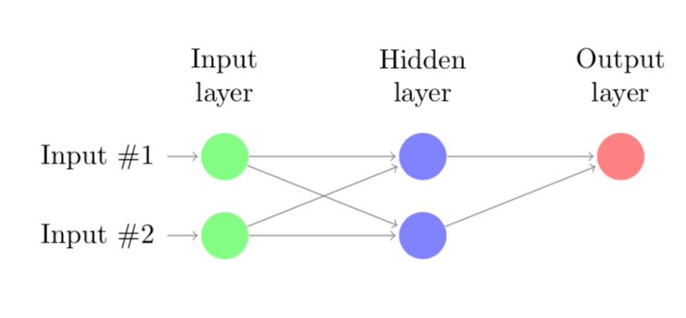
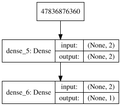

Train XOR Logic Gate in Neural Network
Deep learning (DL) is a thriving research field with an increasing number of practical applications. One of the models used in DL are so called artificial neural networks (ANN). In this tutorial I will not discuss exactly how these ANNs work, but instead I will show how flexible these models can be by training an ANN that will act as a XOR logic gate.
XOR gate
For those of you unfamiliar with logical gates, a logical gate takes two binary values as inputs and produces a single binary output. For the XOR gate it will output a 1 one value if only one of the input values is 1, and 0 otherwise, i.e., graphically:
| Input 1 | Input 2 | Output |
|---|---|---|
| 0 | 0 | 0 |
| 1 | 0 | 1 |
| 0 | 1 | 1 |
| 1 | 1 | 0 |
XOR gate as ANN
GoodFellow et al. show that this XOR gate can be learned by an ANN with one hidden layer consisting of two neurons. We have two input neurons, one hidden layer and an output layer with a single neuron. This network can be graphically represented as:

When I started learning about Deep Learning and these ANN in particular I started wondering whether I could train the small ANN to learn to act like an XOR gate. Since I am still relatively new to these networks I thought it would be a good exercise to program the backpropagation algorithm that trains these models myself.
The network in Python
I decided to model this network in Python, since it is the most popular language for Deep Learning because of the active development of packages like numpy, tensorflow, keras, etc. As I will show below it is very easy to implement the model as described above and train it using a package like keras. However, since I wanted to get a better understanding of the backpropagation algorithm I decided to first implement this algorithm.
Before we start doing that let us first define the four possible combinations of inputs and corresponding outputs, i.e.,
\[ \boldsymbol{X} = \begin{bmatrix} 0 & 0 \\ 1 & 0 \\ 0 & 1 \\ 1 & 1 \end{bmatrix}, \quad \boldsymbol{y} = \begin{bmatrix} 0 \\ 1 \\ 1 \\ 0 \end{bmatrix} \]
In python we get
import numpy as np
# Possible outputs
X = np.matrix('0 0; 1 0; 0 1; 1 1')
y = np.array([0, 1, 1, 0])Own implementation backpropagation algorithm
From this moment onwards I assume that you have a basic understanding of how an ANN works, and understand the basic math behind it. First, I will define some functions that are needed to implement the backpropagation algorithm to solve this problem.
def relu(z):
"""ReLU activation function"""
return np.maximum(z, 0, z)
def relu_prime(z):
"""First derivative of the ReLU activation function"""
return 1*(z>0)
def sigmoid(z):
"""Sigmoid activation function"""
return 1 / (1 + np.exp(-z))
def sigmoid_prime(z):
"""First derivative of sigmoid activation function"""
return np.multiply(sigmoid(z), 1-sigmoid(z))
def cost(a, y):
"""Calculate MSE"""
return ((a - y) ** 2).mean()
def cost_grad(a, y):
"""First derivate of MSE function"""
return a - y
def weighted_sum(W, a, b):
"""Compute the weighted average z for all neurons in new layer"""
return W.dot(a) + b
def forward_prop(x, W, b):
"""Calculate z and a for every neuron using current weights and biases"""
a = [None] * len(layer_sizes)
z = [None] * len(layer_sizes)
a[0] = x.T
for l in range(1, len(a)):
z[l] = weighted_sum(W[l], a[l-1], b[l])
a[l] = sigmoid(z[l])
return (a, z)
def back_prop(a, z, W, y):
"""Calculate error delta for every neuron"""
delta = [None] * len(layer_sizes)
end_node = len(a)-1
delta[end_node] = np.multiply(cost_grad(a[end_node], y), sigmoid_prime(z[end_node]))
for l in reversed(range(1, end_node)):
delta[l] = np.multiply(W[l+1].T.dot(delta[l+1]), sigmoid_prime(z[l]))
return delta
def calc_gradient(W, b, a, delta, eta):
"""Update W and b using gradient descent steps based"""
W_grad = [None] * len(W)
b_grad = [None] * len(b)
for l in range(1, len(W)):
W_grad[l] = a[l-1].dot(delta[l].T)
b_grad[l] = delta[l]
return (W_grad, b_grad)
def backpropagation_iter(X, y, W, b, eta):
"""One iteration of the backpropagation algorithm, i.e., forward- and backward propagate and compute gradient"""
y_pred = [None] * len(y)
for i in range(n):
# First we propagate forward through the network to obtain activation levels and z.
a, z = forward_prop(X[i, :], W, b)
y_pred[i] = np.max(a[-1])
# Back propagate to obtain delta's.
delta = back_prop(a, z, W, y[i])
# This allows us to compute the gradient for this instance. Add this to all.
W_grad, b_grad = calc_gradient(W, b, a, delta, eta)
if i == 0:
W_grad_sum = W_grad
b_grad_sum = b_grad
else:
for l in range(1, len(W_grad)):
W_grad_sum[l] += W_grad[l]
b_grad_sum[l] += b_grad[l]
# Update weights and bias
for l in range(1, len(W)):
W[l] = W[l] - (eta/n) * W_grad_sum[l]
b[l] = b[l] - (eta/n) * b_grad_sum[l]
# Show MSE
MSE = cost(y_pred, y)
return (W, b, y_pred, MSE)We also need to initialise the weights and bias of every link and neuron. It is important to do this randomly. We also set the number of iterations and the learning rate for the gradient descent method.
# Initialise layer sizes of all layers in the neural network
layer_sizes = [X.shape[1], 2, 1]
# Initialise weights and activation and weight vectors as None.
W = [None] * len(layer_sizes)
b = [None] * len(layer_sizes)
# Initialise weights randomly
for l in range(1, len(layer_sizes)):
W[l] = np.random.random((layer_sizes[l], layer_sizes[l-1]))
b[l] = np.random.random((layer_sizes[l], 1))
# Set number of iterations for backpropagation to work, size, and learning rate
n_iter = 100
n = X.shape[0]
eta = 0.1Below we run our backpropagation algorithm for 100 iterations. For every iteration we display the MSE error of the ANN. Interestingly, we observe that the MSE first drops rapidly, but the MSE does not converge to zero. In other words, the training as described above does not lead to a perfect XOR gate; it can only classify 3 pair of inputs correctly.
for iter in range(n_iter+1):
W, b, y_pred, MSE = backpropagation_iter(X, y, W, b, eta)
# Only print every 10 iterations
if iter % 10 == 0:
print('Iteration {0}: {1}'.format(iter, MSE))Iteration 0: 0.38656561971217596
Iteration 10: 0.37967674088143133
Iteration 20: 0.37237614217772685
Iteration 30: 0.3647250789164269
Iteration 40: 0.3567771690665022
Iteration 50: 0.34860542693257024
Iteration 60: 0.3403016700706688
Iteration 70: 0.33197373064753966
Iteration 80: 0.32374029713366215
Iteration 90: 0.3157236870674678
Iteration 100: 0.30804138226491107Keras implementation
Above I showed how to implement the backpropagation algorithm in python. Below, I will show how to implement the same model using the keras library.
from keras.models import Sequential
from keras.layers import Dense
from IPython.display import SVG
from keras.utils.vis_utils import model_to_dot
model = Sequential()
model.add(Dense(units=2, activation='relu', input_dim=2))
model.add(Dense(units=1, activation='linear'))
model.compile(loss='mean_squared_error',
optimizer='sgd',
metrics=['accuracy'])
model.fit(X, y, epochs=300, batch_size=4)
SVG(model_to_dot(model, show_shapes=True).create(prog='dot', format='svg'))Epoch 1/300
4/4 [==============================] - 0s 37ms/step - loss: 0.6039 - acc: 0.7500
Epoch 2/300
4/4 [==============================] - 0s 252us/step - loss: 0.5813 - acc: 0.7500
...
...
Epoch 300/300
4/4 [==============================] - 0s 338us/step - loss: 0.2679 - acc: 0.2500
Eye-balling solution
Apparantly the model of both our own implementation and the implementation in Keras is unable to find a minimum without making any erorrs. However, since we have a near trivial problem it is also possible to eye-ball the optimal weight and bias matrices such that the cost is minimised. To see how this works, let’s consider the following values for weights and biases (obtained from GoodFellow et al.):
\[ \boldsymbol{W}^{(1)} = \begin{bmatrix} 1 & 1 \\ 1 & 1 \end{bmatrix}, \quad \boldsymbol{b}^{(1)} = \begin{bmatrix} 0 & -1 \end{bmatrix}, \quad \boldsymbol{W}^{(2)} = \begin{bmatrix} 1 & -2 \end{bmatrix}, \quad \boldsymbol{b}^{(2)} = 0 \]
The ReLU activation function is used for the first layer. To see how these weights give the correct answer, let’s first “forward” from the input layer to the hidden layer, i.e.,
\[ \boldsymbol{z}^{(1)} = \boldsymbol{X}\boldsymbol{W}^{(1)} + \boldsymbol{b}^{(1)} = \begin{bmatrix} 0 & -1\\ 1 & 0 \\ 1 & 0 \\ 2 & 1 \end{bmatrix}. \]
Applying the activation function to obtain the activation values we get
\[ \boldsymbol{a}^{(1)} = \text{ReLU}\left(\boldsymbol{z}^{(1)} \right) = \begin{bmatrix} 0 & 0 \\ 1 & 0 \\ 1 & 0 \\ 2 & 1 \end{bmatrix}, \]
where the ReLU function is applied element-wise. We now multiply these activations values with the weights corresponding to the last layer to get
\[ \boldsymbol{a}^{(2)} = \boldsymbol{z}^{(2)} = \boldsymbol{a}^{(1)}\boldsymbol{W}^{(2)} + \boldsymbol{b}^{(2)} = \begin{bmatrix} 0 \\ 1 \\ 1 \\ 0 \end{bmatrix} \]
Observe that the activation values of the last (output) layer correspond exactly to the values of \(\boldsymbol{y}\).